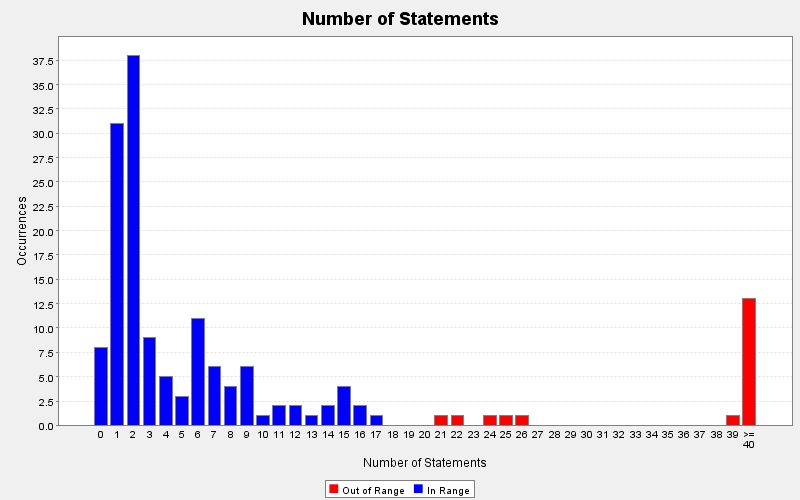

Produced by State Of Flow Eclipse Metrics on Sun Apr 14 20:24:37 EDT 2013
|  |
|
| CC | FE | LOCm | NLS | NOL | NOP | NOS | Line | Method | Type | Package |
|---|---|---|---|---|---|---|---|---|---|---|
| 2 | 0 | 14 | 1 | 2 | 1 | 6 | 394 | destroyStatus(java.lang.Long) | TwitterModel | model |
| 2 | 0 | 13 | 1 | 2 | 1 | 6 | 409 | getTrending(int) | TwitterModel | model |
| 2 | 0 | 13 | 1 | 2 | 1 | 6 | 493 | getUser(long) | TwitterModel | model |
| 2 | 0 | 13 | 1 | 2 | 1 | 6 | 523 | searchUsers(java.lang.String) | TwitterModel | model |
| 2 | 0 | 14 | 1 | 2 | 1 | 6 | 447 | showDirectMessage(long) | TwitterModel | model |
| 2 | 0 | 13 | 1 | 2 | 1 | 6 | 372 | showUser(long) | TwitterModel | model |
| 2 | 0 | 15 | 1 | 2 | 1 | 6 | 277 | updateStatus(java.lang.String) | TwitterModel | model |
| 1 | 0 | 6 | 0 | 1 | 1 | 6 | 47 | getElementAt(int) | Users | model |
| 1 | 0 | 6 | 0 | 1 | 0 | 6 | 38 | displayName() | ControllerTest | test |
| 1 | 0 | 6 | 0 | 1 | 0 | 6 | 45 | twitterName() | ControllerTest | test |
| 1 | 2 | - | 0 | 1 | 1 | 6 | 93 | paintComponent(java.awt.Graphics) | ProfilePanel$(anonymous) | view |
| 2 | 0 | 15 | 1 | 2 | 2 | 5 | 462 | sendDirectMessage(long, java.lang.String) | TwitterModel | model |
| 2 | 0 | 12 | 0 | 2 | 1 | 5 | 54 | getUser(int) | Users | model |
| 1 | 0 | 6 | 0 | 1 | 0 | 5 | 31 | setUp() | ControllerTest | test |
| 1 | 0 | 10 | 0 | 1 | 0 | 4 | 478 | initTimeline() | TwitterController | controller |
| 1 | 0 | 9 | 0 | 1 | 1 | 4 | 75 | add(twitter4j.User) | Users | model |
| 2 | 0 | 8 | 0 | 2 | 0 | 4 | 70 | incrementLoadingScreen() | LoadingPanel | view |
| 1 | 0 | 7 | 0 | 1 | 0 | 4 | 1301 | updateTweetCount() | TwitterGUI | view |
| 1 | 0 | - | 0 | 1 | 1 | 4 | 842 | mouseClicked(java.awt.event.MouseEvent) | TwitterGUI$(anonymous) | view |
| 1 | 0 | 8 | 0 | 1 | 0 | 3 | 188 | getBackgroundImage() | TwitterController | controller |
| 2 | 0 | 10 | 0 | 2 | 0 | 3 | 495 | homeTimeline() | TwitterController | controller |
| 2 | 0 | 10 | 0 | 2 | 0 | 3 | 506 | userTimeline() | TwitterController | controller |
| 1 | 0 | 9 | 0 | 1 | 1 | 3 | 27 | Tweets(twitter4j.Twitter) | Tweets | model |
| 1 | 0 | 9 | 0 | 1 | 1 | 3 | 70 | add(twitter4j.Status) | Tweets | model |
| 1 | 0 | 8 | 0 | 1 | 1 | 3 | 130 | showId(int) | Tweets | model |
| 1 | 0 | 9 | 0 | 1 | 1 | 3 | 29 | Users(java.util.List | Users | model |
| 1 | 0 | 7 | 0 | 1 | 0 | 3 | 103 | showAll() | Users | model |
| 1 | 0 | 8 | 0 | 1 | 1 | 3 | 153 | showId(int) | Users | model |
| 1 | 0 | 8 | 0 | 1 | 1 | 2 | 282 | destroyStatus(java.lang.Long) | TwitterController | controller |
| 1 | 0 | 9 | 0 | 1 | 1 | 2 | 468 | follow(long) | TwitterController | controller |
| 1 | 0 | 7 | 0 | 1 | 0 | 2 | 325 | getAllMessages() | TwitterController | controller |
| 1 | 0 | 8 | 0 | 1 | 0 | 2 | 316 | getAuthUrl() | TwitterController | controller |
| 1 | 0 | 7 | 0 | 1 | 0 | 2 | 353 | getCurrentUserID() | TwitterController | controller |
| 1 | 0 | 7 | 0 | 1 | 0 | 2 | 123 | getDescription() | TwitterController | controller |
| 1 | 0 | 7 | 0 | 1 | 0 | 2 | 98 | getDisplayName() | TwitterController | controller |
| 1 | 0 | 7 | 0 | 1 | 0 | 2 | 240 | getFollowers() | TwitterController | controller |
| 1 | 0 | 7 | 0 | 1 | 0 | 2 | 274 | getFollowersCount() | TwitterController | controller |
| 1 | 0 | 7 | 0 | 1 | 0 | 2 | 248 | getFollowing() | TwitterController | controller |
| 1 | 0 | 7 | 0 | 1 | 0 | 2 | 232 | getFriendsCount() | TwitterController | controller |
| 1 | 0 | 7 | 0 | 1 | 0 | 2 | 224 | getFriendsIDs() | TwitterController | controller |
| 1 | 0 | 7 | 0 | 1 | 0 | 2 | 300 | getHomeTimeline() | TwitterController | controller |
| 1 | 0 | 7 | 0 | 1 | 0 | 2 | 139 | getLocation() | TwitterController | controller |
| 1 | 0 | 7 | 0 | 1 | 0 | 2 | 172 | getProfileBanner() | TwitterController | controller |
| 1 | 0 | 7 | 0 | 1 | 0 | 2 | 147 | getProfileImage() | TwitterController | controller |
| 1 | 0 | 7 | 0 | 1 | 0 | 2 | 155 | getSmallerProfileImage() | TwitterController | controller |
| 1 | 0 | 8 | 0 | 1 | 1 | 2 | 163 | getSmallerProfileImage(long) | TwitterController | controller |
| 1 | 0 | 8 | 0 | 1 | 1 | 2 | 291 | getTrending(int) | TwitterController | controller |
| 1 | 0 | 7 | 0 | 1 | 0 | 2 | 216 | getTweetCount() | TwitterController | controller |
| 1 | 0 | 7 | 0 | 1 | 0 | 2 | 106 | getTwitterName() | TwitterController | controller |
| 1 | 0 | 8 | 0 | 1 | 1 | 2 | 114 | getTwitterName(long) | TwitterController | controller |
Produced by State Of Flow Eclipse Metrics on Sun Apr 14 20:24:37 EDT 2013